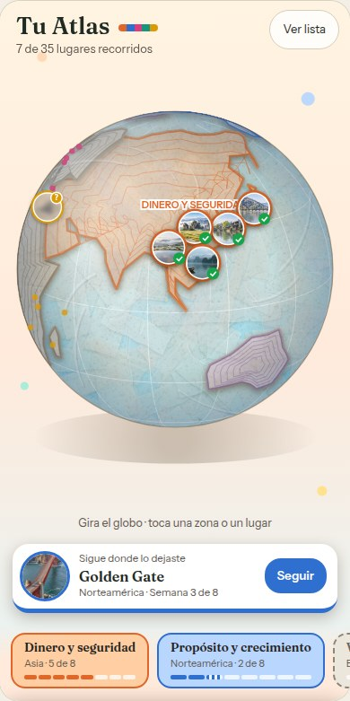
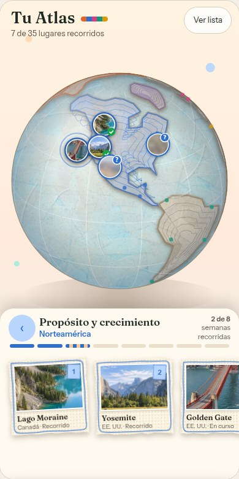
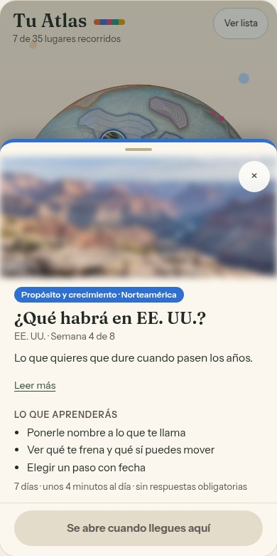
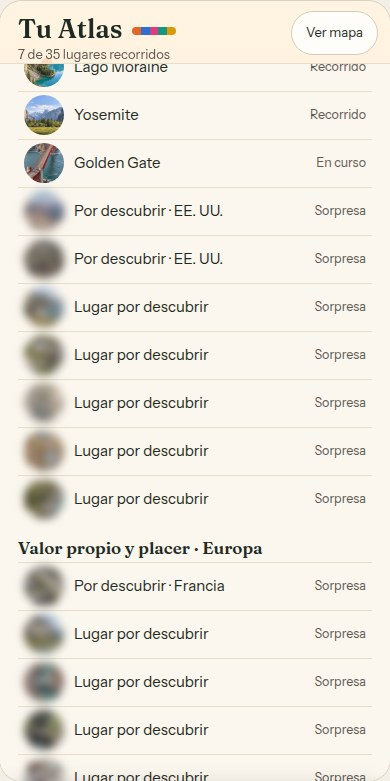

Atlas · developer handoff · prototype, not production code
How the Atlas shows places a user has not reached yet. Only the next two places tease with a blurred photo and a “?”. Everything further ahead is a small coloured dot, and its name and photo stay hidden until the user gets there.




Each place has a state from the user's progress, plus an order (o, 0-based) inside its area of life. Places inside an area open in order.
state(place) ∈ done | current | open | locked // from backend progress
lockRank(p) = count of locked places in p.area with o < p.o
isTeaser(p) = state(p) == locked
&& lockRank(p) < (areaStarted(p.area) ? 2 : 1)
isHidden(p) = state(p) == locked && !isTeaser(p)
areaStarted(a)= any place in a is done or current
So a started area teases its next two places. An area that hasn't been started teases only its first place, so every area always shows at least one “?”.
| State | Globe pin | Zone postcard | Place sheet | List row |
|---|---|---|---|---|
| done | Photo medallion, area-colour ring, green check | Photo, name, “País · Recorrido” | Full content. CTA “Volver a recorrer” | Photo, name, “Recorrido” |
| current | Photo medallion with a pulsing ring (static if reduced motion) | Photo, name, “País · En curso” | Full content. CTA “Seguir donde lo dejaste” | “En curso” |
| open | Photo medallion, no badge | Photo, name, “País · Abierto” | Full content. CTA “Empezar este lugar” | “Abierto” |
| teaser | Photo blurred (~2.6px at pin size, saturation 0.75, 28% warm veil) and a “?” badge in the area colour, top-right | Blurred photo (3px). Title “Por descubrir”, sub “Siguiente · País” or “Después · País” | Hero blurred 5px. Title “¿Qué habrá en País?”. Blurb shown. CTA disabled: “Se abre cuando llegues aquí” | Blurred thumb, “Por descubrir · País”, “Sorpresa” |
| hidden | Dot, 3.2px radius, area colour at 80%. Not tappable | No photo. Dashed paper block with “?”. Title “Semana N”, sub “Sorpresa” | Hero blurred 14px. Title “Lugar por descubrir”, sub “Área · Semana N de M”, blurb replaced (see copy). CTA disabled | Blurred thumb, “Lugar por descubrir”, “Sorpresa” |
Areas that haven't been started draw their land and labels in grey. A teaser in such an area still uses the area's real colour, so it reads as an invitation rather than a dead end.
| Where | String | Notes |
|---|---|---|
| Teaser postcard title | Por descubrir | |
| Teaser postcard sub | Siguiente · {país} / Después · {país} | “Siguiente” for lockRank 0, “Después” for 1 |
| Hidden postcard | Semana {n} · Sorpresa | No name, no country |
| Teaser sheet title | ¿Qué habrá en {país}? | |
| Hidden sheet title | Lugar por descubrir | Also the list label and image alt text |
| Hidden sheet blurb | Se revela cuando llegues. Cada lugar que terminas abre el siguiente. | |
| Locked CTA (disabled) | Se abre cuando llegues aquí | Don't name the previous place. It may be a teaser itself |
| “Leer más” path | Lago Moraine → Yosemite → Golden Gate → ? → ? | Teaser and hidden names show as “?” |
| List status | Sorpresa | Replaces “Bloqueado” |
I went through the Atlas prototype for anything a build would trip on. Green is done in the prototype, amber needs a product decision, and red needs content or assets.
Hidden names were leaking
“Ver lista” and “Leer más” showed the names and photos of hidden places. Both now follow the rule, checked with a script.
The list scrolled under the header
The list now starts below the “Tu Atlas” header and the “Ver mapa” button.
How areas open
In the sample data only Asia and North America have progress. Every place in Europe, South America and Africa is locked, so there's no way in. Decide whether all five areas start open (first place open), open one at a time, or open after a set number of weeks.
Places per area aren't 8 everywhere
Counts now: Asia 6, Europe 5, South America 5, North America 10, Africa 10. The prototype assumes 8 (“2 de 8”, “Semana N de 8”, 8-segment bars, “Pronto” fillers, and “Lugar extra” after 8). Agreed direction: uneven counts per area, minimum 6. Every “de 8” should become “de {total of the area}”.
Oceania
Proposed as part of Asia · Dinero y seguridad (Uluru and Milford Sound). The land is drawn on the globe but has no places yet.
Globe and postcard look
“Maché natural” globe, “Postal garabato” postcards, and the globe stays big when you open an area.
Photos still to come (Codex prompt sent)
Europe: Provence and Cinque Terre. South America: Iguazú and Valparaíso. Oceania: Uluru and Milford Sound. Optional spares: Hallstatt, Uyuni, Great Barrier Reef. Also Lan Hạ week 1 day 7 (scheduled 2026-11-01).
Image sizes for production
The prototype uses 240 px pin and postcard thumbnails and 680×400 sheet heroes. Ship at least 2×: 480 px square thumbnails and 1360×800 heroes. Blur on the device. Never ship a pre-blurred copy alongside the sharp one.
English copy
All Atlas strings are Spanish only, including the 35 place blurbs and the 5 “Lo que aprenderás” lists. They need English versions and Alejandra's review of the Spanish.
Journey questions for weeks 7–9
Europe, South America and Africa still use placeholder questions copied from week 5. This doesn't block the Atlas, but the CTA starts those journeys.
Not in the prototype
The reveal animation, the “Seguir” card's behaviour when nothing is in progress, offline and loading states for the globe, and analytics events (teaser tapped, hidden tapped, reveal seen).
Area { id, name_es, region_es, color, tint, places: Place[] (ordered) }
Place { id, areaId, order, state, // always
country_es, // teaser and up
name_es, blurb_es, thumbUrl, heroUrl, lat, lon, // teaser: thumb/hero only (to blur);
} // hidden: none of these
Pins for hidden places only need lat/lon, colour and order.
The prototype computes everything on the client from one static list. That's fine for a prototype, but not for production, because it ships every hidden name and photo to the phone.